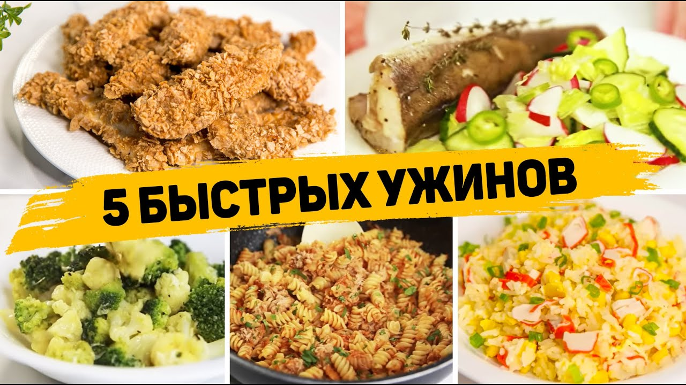
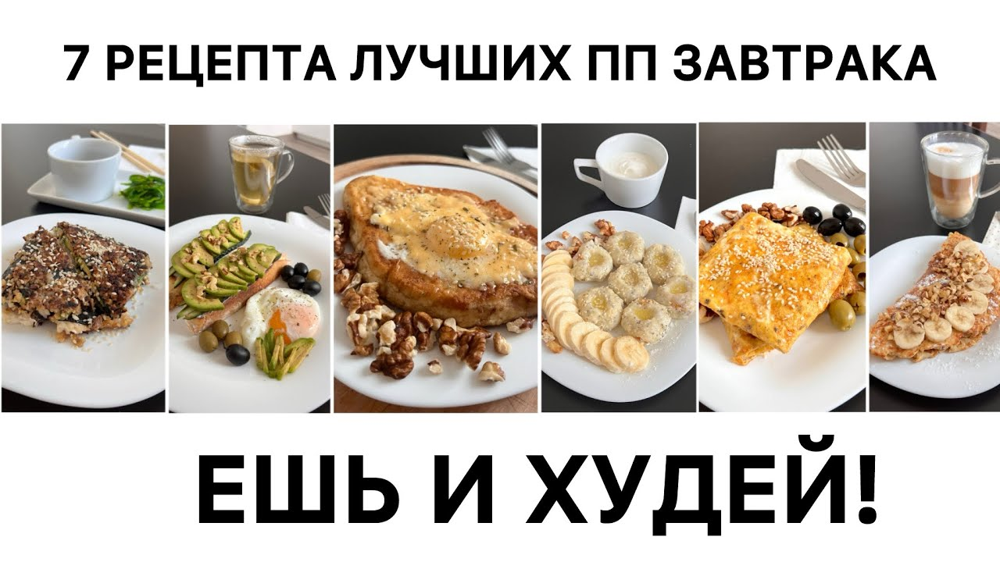
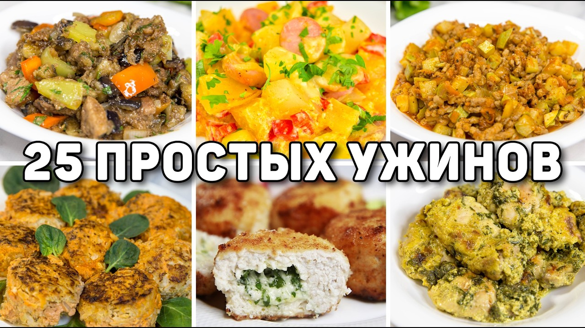
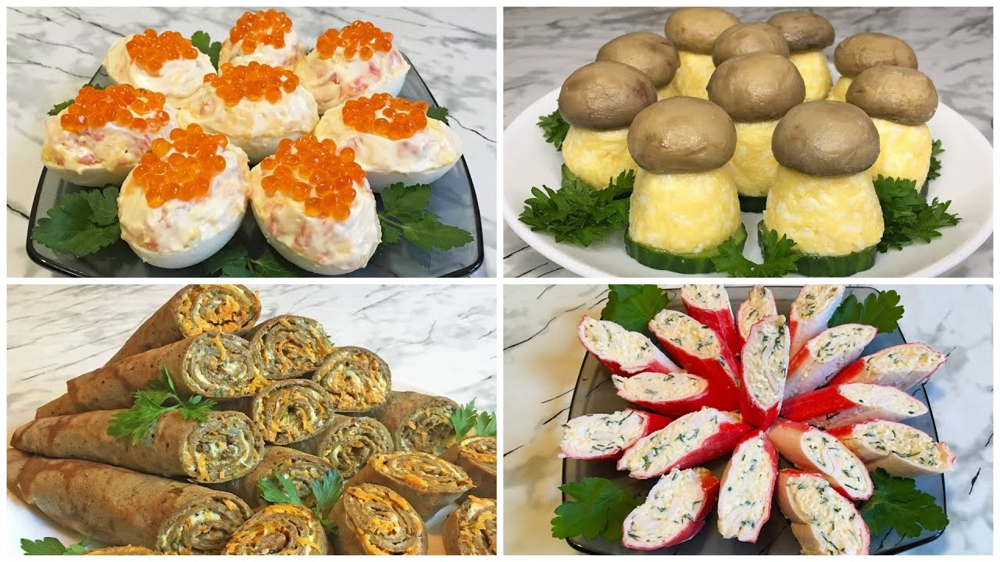

Коллекции рецептов

Зимние блюда
Согревающие и сытные рецепты для холодного времени года

Быстрые ужины
Рецепты, которые готовятся не более 30 минут

ПП-рецепты
Полезные и сбалансированные блюда для здорового питания

Семейные ужины
Рецепты, которые понравятся и взрослым, и детям

Праздничные блюда
Рецепты для новогоднего стола и особых случаев
Экономные рецепты
Вкусные блюда из недорогих продуктов